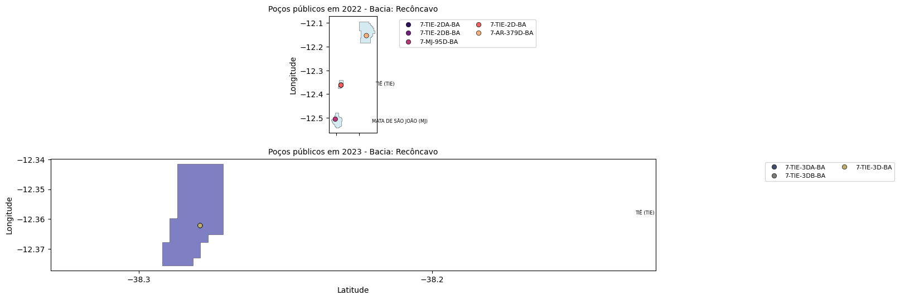

Dataviz Code Session: Dados Geoespaciais
Contents
12. Dataviz Code Session: Dados Geoespaciais#
12.1. Objetivos da DCS#
Aplicar técnicas de dataviz para plotagem e manipulação de representações visuais geoespaciais relacionadas a campos e poços de petróleo em bacias sedimentares brasileiras.
12.2. Ferramentas utilizadas#
Módulos Python
numpypandasmatplotlibseaborngeopandas
12.3. Aplicação do modelo referencial#
Vide Capítulo 3.
import numpy as np, pandas as pd, matplotlib.pyplot as plt, seaborn as sb, geopandas as geo
12.3.1. Dados de entrada#
Shapefiles dos campos de produção (ANP) - [Fonte]
geocp = geo.read_file('../data/ANP_campos_shp/CAMPOS_PRODUCAO_SIRGASPolygon.shp')
geocp
| NUM_RODADA | NOM_CAMPO | AREA | OPERADOR_C | NUM_CONTRA | DAT_ASSINA | DAT_TERMIN | NOM_BACIA | COD_CAMPO | SIG_CAMPO | DAT_DESCOB | DAT_INICIO | ETAPA | MED_LAMINA | FLUIDO_PRI | ID | geometry | |
|---|---|---|---|---|---|---|---|---|---|---|---|---|---|---|---|---|---|
| 0 | Rodada 11 | IRARA | 6.0 | BGM Petróleo e Gás Ltda. | 48610005457201381 | None | None | Espírito Santo | 4841.0 | IRAR | 03/01/2022 | 13/07/2022 | Produção | 0.0 | ÓLEO | 2460.0 | POLYGON ((-39.81288 -19.25048, -39.81288 -19.2... |
| 1 | Rodada 0 | PESCADA | 55.0 | Petróleo Brasileiro S.A. | 480000039129784 | 06-08-1998 | None | Potiguar | 213.0 | PE | 24-10-1980 | 01-05-1999 | Produção | 19.0 | GÁS | 1100.0 | POLYGON ((-36.76596 -4.73997, -36.76856 -4.739... |
| 2 | Rodada 0 | SALGO | 11.0 | Petróleo Brasileiro S.A. | 480000038419738 | 06-08-1998 | None | Sergipe | 275.0 | SG | 01-12-1984 | 31-12-1986 | Em Devolução | 14.0 | ÓLEO | 1102.0 | POLYGON ((-36.57586 -10.63324, -36.57846 -10.6... |
| 3 | Rodada 0 | CAXAREU | 34.0 | Petróleo Brasileiro S.A. | 480000035609749 | 06/08/1998 | None | Campos | 1164.0 | CXR | 07-08-2002 | None | Desenvolvimento | 1141.0 | ÓLEO | 1125.0 | POLYGON ((-40.07812 -21.39323, -40.07812 -21.3... |
| 4 | Rodada 0 | CEXIS | 54.0 | 3R Candeias S.A. | 480000036419749 | 06-08-1998 | None | Recôncavo | 88.0 | CX | 07-03-1966 | 30-06-1966 | Produção | 0.0 | GÁS | 1126.0 | POLYGON ((-38.4639 -12.62544, -38.4613 -12.625... |
| ... | ... | ... | ... | ... | ... | ... | ... | ... | ... | ... | ... | ... | ... | ... | ... | ... | ... |
| 422 | AM2 | Porto do Mangue | 6.0 | Máxima 07 Exploração e Produção de Petróleo Ltda | 48610007488200648 | None | None | Potiguar | 4535.0 | 4201 | 10/10/2011 | None | Plano de Avaliação (Teste de longa duração) | 0.0 | None | 2623.0 | POLYGON ((-36.79461 -5.09674, -36.79461 -5.099... |
| 423 | Rodada 0 | MIRANGA LESTE | 1.0 | Petróleo Brasileiro S.A. | 480000036759761 | None | None | Recôncavo | 182.0 | MGL | None | None | Em Devolução | 0.0 | OUTROS | 2661.0 | POLYGON ((-38.14358 -12.32336, -38.14619 -12.3... |
| 424 | Rodada 13 (AM) | SÃO JOÃO | 6.0 | Petro-Victory Energia Ltda. | 48610002005201691 | 12/5/2016 | None | Barreirinhas | 4695.0 | SJ | 01/08/1966 | 01/07/2020 | Produção | 0.0 | Óleo | 2662.0 | POLYGON ((-43.32852 -2.59932, -43.32852 -2.596... |
| 425 | Rodada 9 | GAVIÃO CARIJÓ | 163.0 | Eneva S.A. | 48610001413200815 | None | None | Parnaíba | 4629.0 | GVCA | None | None | Desenvolvimento | 0.0 | GÁS | 2700.0 | POLYGON ((-44.33073 -5.66927, -44.33073 -5.684... |
| 426 | Rodada 0 | LESTE DE POÇO XAVIER | 22.0 | Potiguar E&P S.A. | 4861000400098 | None | None | Potiguar | 167.0 | LPX | None | None | Produção | 0.0 | ÓLEO | 2701.0 | POLYGON ((-37.67708 -5.52122, -37.67448 -5.521... |
427 rows × 17 columns
Shapefiles do território nacional
geobr = geo.read_file('../data/gadm36_BRA_shp/gadm36_BRA_1.shp')
geobr
| GID_0 | NAME_0 | GID_1 | NAME_1 | VARNAME_1 | NL_NAME_1 | TYPE_1 | ENGTYPE_1 | CC_1 | HASC_1 | geometry | |
|---|---|---|---|---|---|---|---|---|---|---|---|
| 0 | BRA | Brazil | BRA.1_1 | Acre | None | None | Estado | State | None | BR.AC | POLYGON ((-68.10553 -10.72192, -68.10547 -10.7... |
| 1 | BRA | Brazil | BRA.2_1 | Alagoas | None | None | Estado | State | None | BR.AL | MULTIPOLYGON (((-35.88986 -9.84431, -35.88986 ... |
| 2 | BRA | Brazil | BRA.3_1 | Amapá | None | None | Estado | State | None | BR.AP | MULTIPOLYGON (((-50.8257 2.52208, -50.8257 2.5... |
| 3 | BRA | Brazil | BRA.4_1 | Amazonas | Amazone | None | Estado | State | None | BR.AM | POLYGON ((-58.13699 -7.35614, -58.13682 -7.356... |
| 4 | BRA | Brazil | BRA.5_1 | Bahia | Ba¡a | None | Estado | State | None | BR.BA | MULTIPOLYGON (((-38.69208 -17.95958, -38.69208... |
| 5 | BRA | Brazil | BRA.6_1 | Ceará | None | None | Estado | State | None | BR.CE | MULTIPOLYGON (((-40.83181 -2.88125, -40.83181 ... |
| 6 | BRA | Brazil | BRA.7_1 | Distrito Federal | None | None | Distrito Federal | Federal District | None | BR.DF | POLYGON ((-47.93915 -16.05135, -48.0211 -16.05... |
| 7 | BRA | Brazil | BRA.8_1 | Espírito Santo | Espiritu Santo | None | Estado | State | None | BR.ES | MULTIPOLYGON (((-40.88403 -21.16125, -40.88403... |
| 8 | BRA | Brazil | BRA.9_1 | Goiás | Goiáz|Goyáz | None | Estado | State | None | BR.GO | POLYGON ((-49.0048 -18.53718, -49.01248 -18.53... |
| 9 | BRA | Brazil | BRA.10_1 | Maranhão | São Luíz de Maranhão | None | Estado | State | None | BR.MA | MULTIPOLYGON (((-44.54986 -1.88458, -44.54986 ... |
| 10 | BRA | Brazil | BRA.12_1 | Mato Grosso | Matto Grosso | None | Estado | State | None | BR.MT | POLYGON ((-52.47143 -16.12672, -52.48842 -16.1... |
| 11 | BRA | Brazil | BRA.11_1 | Mato Grosso do Sul | None | None | Estado | State | None | BR.MS | POLYGON ((-54.16836 -23.9992, -54.17063 -24.00... |
| 12 | BRA | Brazil | BRA.13_1 | Minas Gerais | Minas|Minas Geraes | None | Estado | State | None | BR.MG | POLYGON ((-50.84402 -19.96758, -50.85332 -19.9... |
| 13 | BRA | Brazil | BRA.14_1 | Pará | None | None | Estado | State | None | BR.PA | MULTIPOLYGON (((-47.29792 -0.63375, -47.29792 ... |
| 14 | BRA | Brazil | BRA.15_1 | Paraíba | Parahyba | None | Estado | State | None | BR.PB | MULTIPOLYGON (((-43.01208 -9.40801, -43.01453 ... |
| 15 | BRA | Brazil | BRA.16_1 | Paraná | None | None | Estado | State | None | BR.PR | MULTIPOLYGON (((-48.36514 -25.73403, -48.36514... |
| 16 | BRA | Brazil | BRA.17_1 | Pernambuco | Pernambouc | None | Estado | State | None | BR.PE | MULTIPOLYGON (((-35.13597 -8.83792, -35.13597 ... |
| 17 | BRA | Brazil | BRA.18_1 | Piauí | Piauhy | None | Estado | State | None | BR.PI | POLYGON ((-42.69078 -9.54547, -42.69122 -9.545... |
| 18 | BRA | Brazil | BRA.19_1 | Rio de Janeiro | None | None | Estado | State | None | BR.RJ | MULTIPOLYGON (((-44.67125 -23.35458, -44.67125... |
| 19 | BRA | Brazil | BRA.20_1 | Rio Grande do Norte | None | None | Estado | State | None | BR.RN | MULTIPOLYGON (((-35.10958 -6.19375, -35.10958 ... |
| 20 | BRA | Brazil | BRA.21_1 | Rio Grande do Sul | None | None | Estado | State | None | BR.RS | MULTIPOLYGON (((-52.07069 -32.02847, -52.07069... |
| 21 | BRA | Brazil | BRA.22_1 | Rondônia | Guaporé | None | Estado | State | None | BR.RO | POLYGON ((-62.89219 -12.86014, -62.89212 -12.8... |
| 22 | BRA | Brazil | BRA.23_1 | Roraima | Rio Branco | None | Estado | State | None | BR.RR | POLYGON ((-60.0379 0.26349, -60.04676 0.23211,... |
| 23 | BRA | Brazil | BRA.24_1 | Santa Catarina | Santa Catharina | None | Estado | State | None | BR.SC | MULTIPOLYGON (((-48.54236 -27.9318, -48.54236 ... |
| 24 | BRA | Brazil | BRA.25_1 | São Paulo | None | None | Estado | State | None | BR.SP | MULTIPOLYGON (((-48.08236 -25.28431, -48.08236... |
| 25 | BRA | Brazil | BRA.26_1 | Sergipe | None | None | Estado | State | None | BR.SE | MULTIPOLYGON (((-37.38458 -11.45986, -37.38458... |
| 26 | BRA | Brazil | BRA.27_1 | Tocantins | None | None | Estado | State | None | BR.TO | POLYGON ((-49.23736 -12.88397, -49.23532 -12.8... |
Planilhas de poços públicos (2022 e 2023)
p2022 = pd.read_excel('../data/ANP_pocos_publicos/planilha-pocos-publicos-2022.xlsx')
p2023 = pd.read_excel('../data/ANP_pocos_publicos/planilha-pocos-publicos-2023.xlsx')
12.3.2. Processamento#
def filter_by_state(state,fluid,phase):
"""Seleciona poços e campos para estado, bacia e propriedades especificados."""
a = p2022[p2022.ESTADO == state[0]]
b = p2023[p2023.ESTADO == state[0]]
c = geobr[geobr.NAME_1 == state[1]]
d = geocp[(geocp.NOM_BACIA == basin) & (geocp.FLUIDO_PRI == fluid) & (geocp.ETAPA == phase)]
return a, b, c, d
Escolha de parâmetros e aplicação de filtragem
state = ('BA','Bahia')
basin = 'Recôncavo'
fluid = 'ÓLEO'
stage = 'Produção'
p2022_s, p2023_s, geo_s, geo_cp = filter_by_state(state,fluid,stage)
# casting de coordenadas
p2023_s['LATITUDE_BASE_DD'] = p2023_s['LATITUDE_BASE_DD'].str.replace(',','.').astype(float)
p2023_s['LONGITUDE_BASE_DD'] = p2023_s['LONGITUDE_BASE_DD'].str.replace(',','.').astype(float)
12.3.3. Visualizações#
Mapa geográfico de território e campos
f, a = plt.subplots()
geo_s.plot(ax=a,edgecolor='k',facecolor='r',alpha=0.4)
geo_cp.plot(ax=a,edgecolor='w',facecolor='g',alpha=1.0);

Selecionando poços (onshore ou offshore) que se tornaram públicos em 2022 e em 2023
# para onshore, 'T'
p2022_m = p2022_s[p2022_s['TERRA_MAR'] == 'T']
p2022_tcm = p2022_m['CAMPO'].unique()
p2023_m = p2023_s[p2023_s['TERRA_MAR'] == 'T']
p2023_tcm = p2023_m['CAMPO'].unique()
Selecionando campos relacionados aos poços
geo_cp_m_2022 = geo_cp.apply(lambda row: row[geo_cp['NOM_CAMPO'].isin(p2022_tcm)])
geo_cp_m_2023 = geo_cp.apply(lambda row: row[geo_cp['NOM_CAMPO'].isin(p2023_tcm)])
Plota campos de interesse
f, a = plt.subplots()
#geo_s.plot(ax=a,edgecolor='k',facecolor='gray',alpha=.2)
geo_cp_m_2022.plot(ax=a,edgecolor='k',lw=.5,facecolor='lightblue',alpha=.7)
geo_cp_m_2023.plot(ax=a,edgecolor='k',lw=.5,facecolor='darkblue',alpha=.7);
Lista de campos participantes da RV
cp_list_2022 = geo_cp_m_2022.NOM_CAMPO.tolist()
cp_list_2023 = geo_cp_m_2023.NOM_CAMPO.tolist()
print('Atividade de divulgação em 2022 nos campos de: ')
print(*[x for x in cp_list_2022], sep=', ', end='.\n\n')
print('Atividade de divulgação em 2023 nos campos de: ')
print(*[x for x in cp_list_2023], sep=', ', end='.\n')
Atividade de divulgação em 2022 nos campos de:
TIÊ, ARAÇÁS, MATA DE SÃO JOÃO.
Atividade de divulgação em 2023 nos campos de:
TIÊ.
12.3.4. RV finalística#
f, a = plt.subplots(2,1,figsize=(14,6),sharex=True)
# --- 2022
geo_cp_m_2022.plot(ax=a[0],edgecolor='k',lw=.5,facecolor='lightblue',alpha=.5)
p2022_m_1 = p2022_m[p2022_m['CAMPO'].isin(cp_list_2022)]
p2022_m_1f = sb.scatterplot(data=p2022_m_1,
x='LONGITUDE1',
y='LATITUDE_1',
hue='POCO',
marker='o',edgecolor='k',
palette='magma',
ax=a[0])
p2022_m_1f.legend(bbox_to_anchor=(1.4,1),ncol=2,fontsize=8)
a[0].set_ylabel('Longitude')
a[0].set_title(f'Poços públicos em 2022 - Bacia: {basin}',fontsize=10)
geo_cp_m_2022.apply(lambda x: a[0].annotate(
text=f'{x.NOM_CAMPO} ({x.SIG_CAMPO})',
xy=np.array(x.geometry.centroid.coords[0]) + np.array([0.15,0]),
ha='left',
va='center',
color = "black",
fontsize=6,
weight='light'),
axis=1)
# --- 2023
geo_cp_m_2023.plot(ax=a[1],edgecolor='k',lw=.5,facecolor='darkblue',alpha=.5)
p2023_m_1 = p2023_m[p2023_m['CAMPO'].isin(cp_list_2023)]
p2023_m_1f = sb.scatterplot(data=p2023_m_1,
x='LONGITUDE_BASE_DD',
y='LATITUDE_BASE_DD',
hue='POCO',
marker='o',edgecolor='k',
palette='cividis',
ax=a[1])
p2023_m_1f.legend(bbox_to_anchor=(1.4,1),ncol=2,fontsize=8)
a[1].set_xlabel('Latitude')
a[1].set_ylabel('Longitude')
a[1].set_title(f'Poços públicos em 2023 - Bacia: {basin}',fontsize=10)
geo_cp_m_2023.apply(lambda x: a[1].annotate(
text=f'{x.NOM_CAMPO} ({x.SIG_CAMPO})',
xy=np.array(x.geometry.centroid.coords[0]) + np.array([0.15,0]),
ha='left',
va='center',
color = "black",
fontsize=6,
weight='light'),
axis=1);
